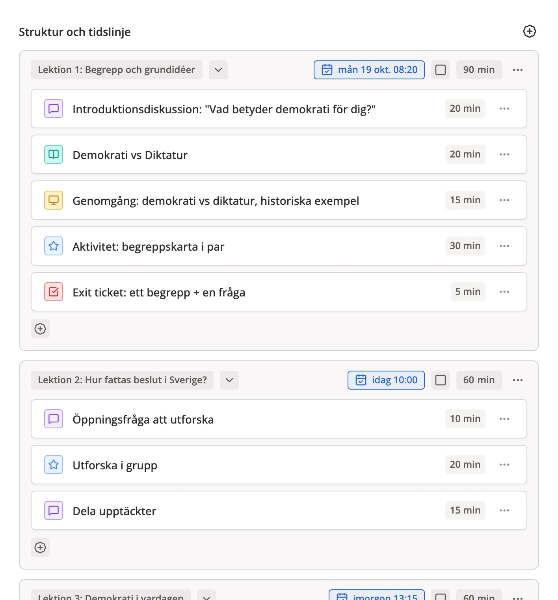
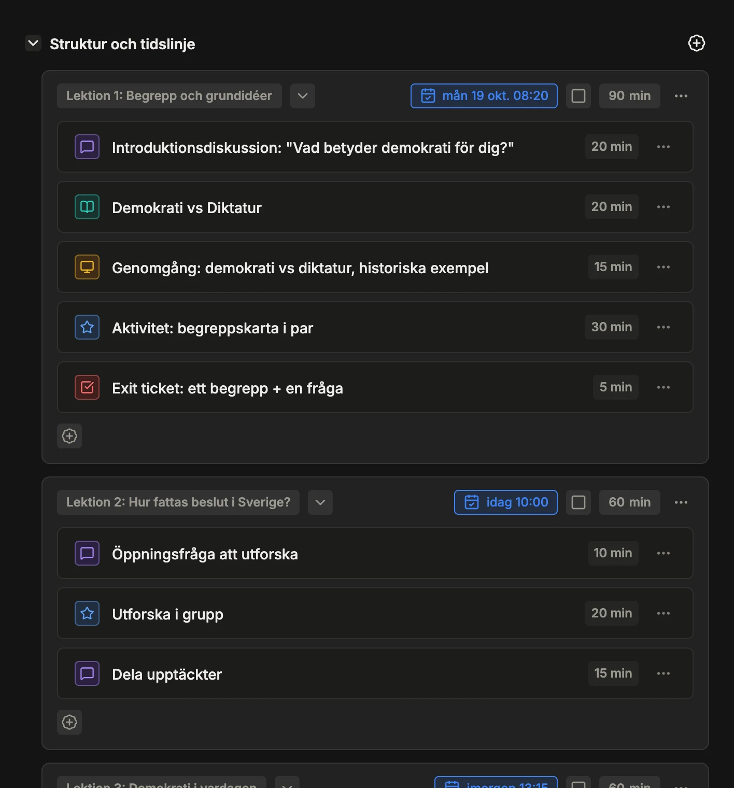

Struktur och tidslinje
Se hela upplägget, lektion för lektion.
Dela in arbetet i lektioner och aktiviteter, dra dem dit de passar och fäll ihop det du inte jobbar med. Blir en lektion för lång säger Lossi till.

